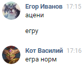
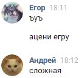
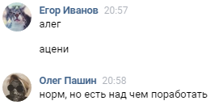
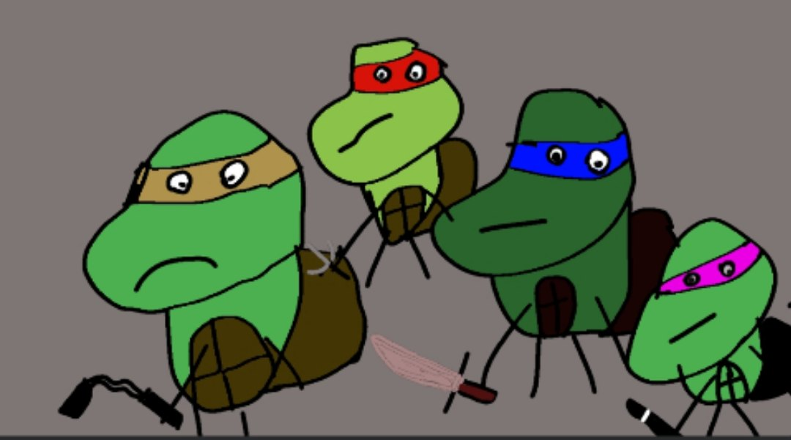

TVAR simulator 0.1.9.1
Управление:WASD(на компьютерах) или Большие стрелки снизу(на телефонах)
СТАРТ
канвас не поддерживается браузером скачяй другой
/\
<
\/
>
Разработчик - Егор Иванов ( WebJCou )
vk.com/myphpsql
Режиссер - Олег Пашин ( P3LM3N )
vk.com/true_p3lm3n
Режиссер - Егор Чуприн
vk.com/echuprin2000
Известный лидер телефонной версии 1083 секунды - Дддима Рудый
vk.com/over.powered
  
